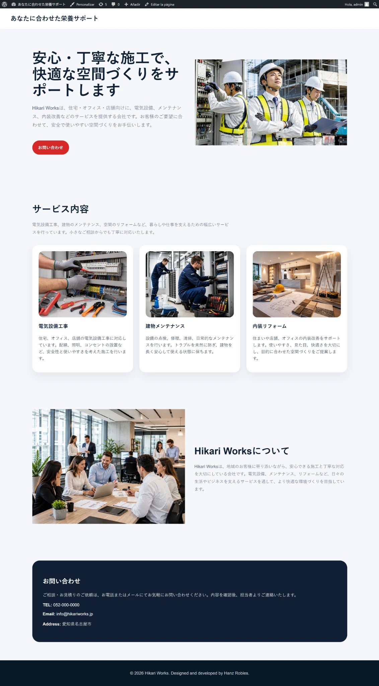
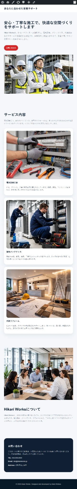
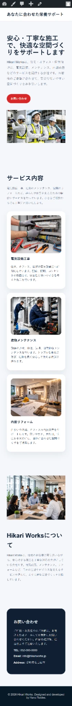
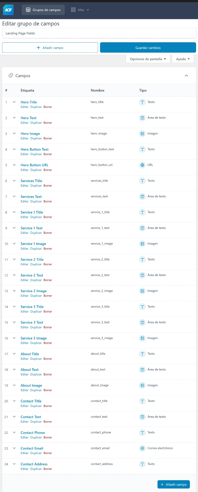
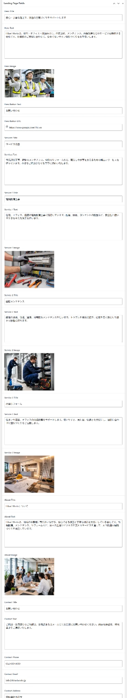

WordPress / ACF / PHP
Página corporativa en WordPress
Landing page corporativa editable desde WordPress usando ACF gratuito para modificar textos, imágenes y datos de contacto.

Resumen del proyecto
Hikari Works es un sitio WordPress creado para una empresa japonesa ficticia. Permite editar desde el panel de administración el hero, servicios, información de la empresa y datos de contacto.
Diseño responsive
Se creó un diseño adaptable para pantalla desktop, tablet y mobile.
Tablet

Mobile

Funciones implementadas
ACFフィールド
WordPressの管理画面からタイトル、テキスト、画像、ボタン、連絡先情報を編集できるカスタムフィールドを作成しました。
カスタムテーマ
front-page.php、header.php、footer.phpなどのPHPファイルを使って、オリジナルテーマを一から制作しました。
編集可能なコンテンツ
クライアントはコードを触らずに、WordPressの管理画面からメインコンテンツを変更できます。
Panel editable con ACF
Se usó ACF gratuito para permitir la edición de textos, imágenes, servicios y datos de contacto desde el panel de WordPress.
Configuración de campos

Edición de contenido

Qué aprendí
Con este proyecto practiqué la estructura de temas de WordPress, el uso de campos personalizados con ACF, la conexión de campos mediante PHP y la creación de una página editable para clientes.